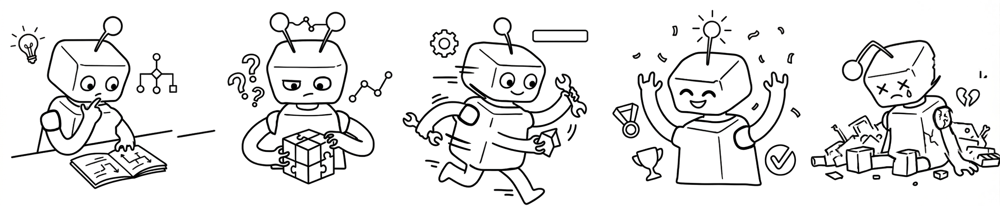

Invited Talks
Speakers
We thank the current speakers who are interested in giving a talk.

As commercial agentic systems such as Claude Code and Codex see widespread real-world deployment in early 2026, their behaviors have grown increasingly complex. These systems autonomously plan, execute, and iterate on multi-step tasks, generating vast amounts of behavioral data. Yet current evaluation relies almost exclusively on automated benchmarks: pass/fail metrics that reveal whether an agent succeeded but not how it behaved, why it failed, or how humans made sense of its actions. Closing this gap is essential for building agents that are not only effective but also interpretable, debuggable, and trustworthy.
The Interpreting Agent Behavior (IAB) workshop investigates agent behavior from three complementary perspectives: (1) How do agents behave?, including how they make decisions, propose and revise plans, select and use tools, fail, and recover from errors; (2) How do humans respond?, including how users write and adapt prompts, verify agent-generated outputs, and monitor ongoing executions; and (3) How do they interact?, including how humans and agents collaborate more effectively, communicate intent, and negotiate breakdowns. We aim to build shared empirical methods, resources, and vocabulary for interpreting agent behavior.
We plan to investigate agent behavior from three complementary perspectives.
We thank the current speakers who are interested in giving a talk.
Full-day workshop with keynotes, paper presentations, posters, and a panel discussion.
We solicit two types of non-archival submissions and welcome empirical studies, datasets, methods papers, tools, and negative results on understanding agent behavior.
We particularly welcome contributions across four categories:
We also encourage negative results and methodological position papers.
Up to 9 pages + references. For full empirical studies, datasets, benchmarks, or comprehensive analyses.
Up to 4 pages + references. For position papers, tools, demos, preliminary findings, and negative results.
COLM-style formatting, double-anonymous review, and at least 2 reviews per submission via OpenReview.
We thank the faculty and senior researchers who have provided guidance and support for this workshop.
Ziang Xiao (JHU) · Soufiane Hayou (JHU) · Toby Jia-Jun Li (Notre Dame) · Hang Jiang (Northeastern) · Weiyan Shi (Northeastern) · Wei Lu (Nanyang Technological University, Singapore) · Samuel Nathanson (xAI)
To be announced